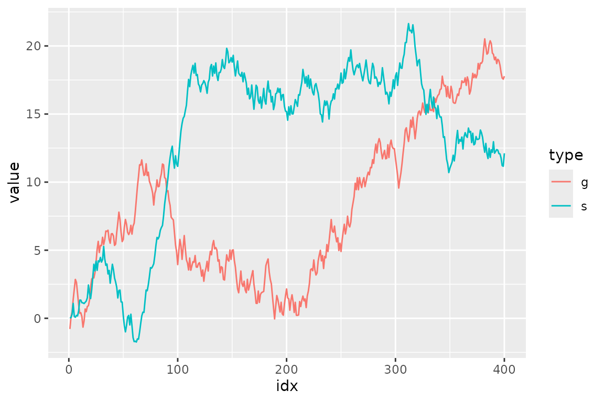
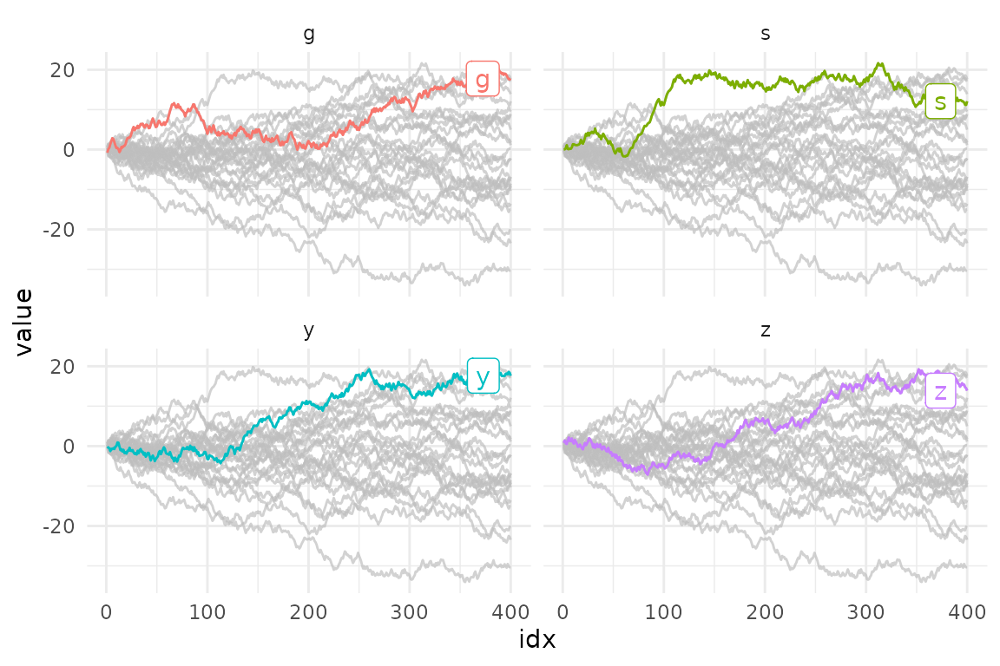
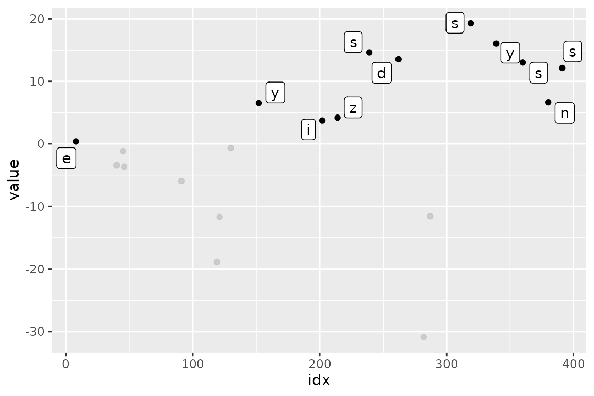
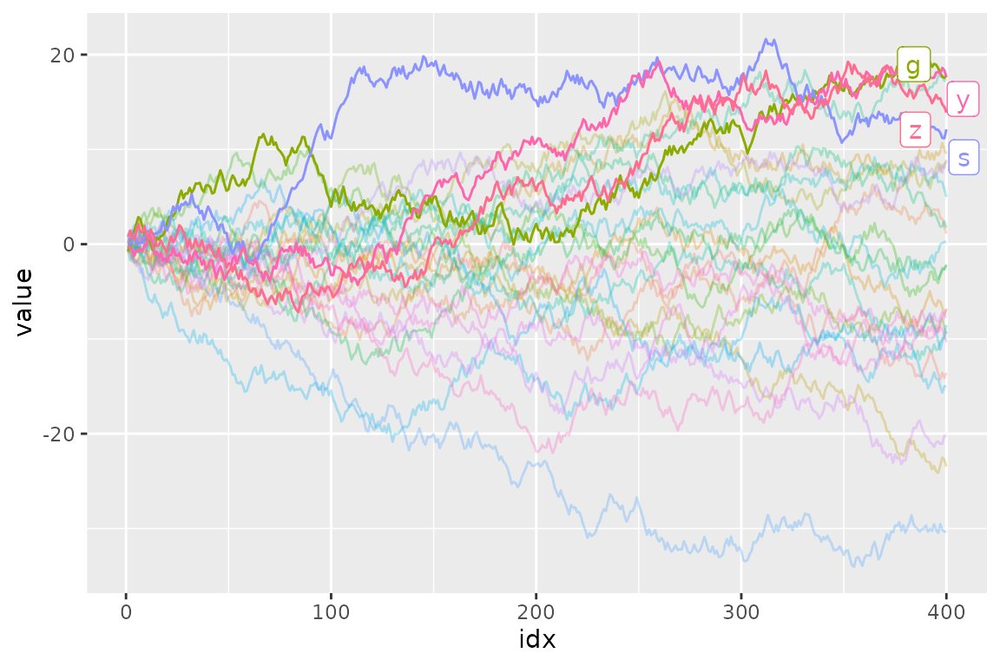
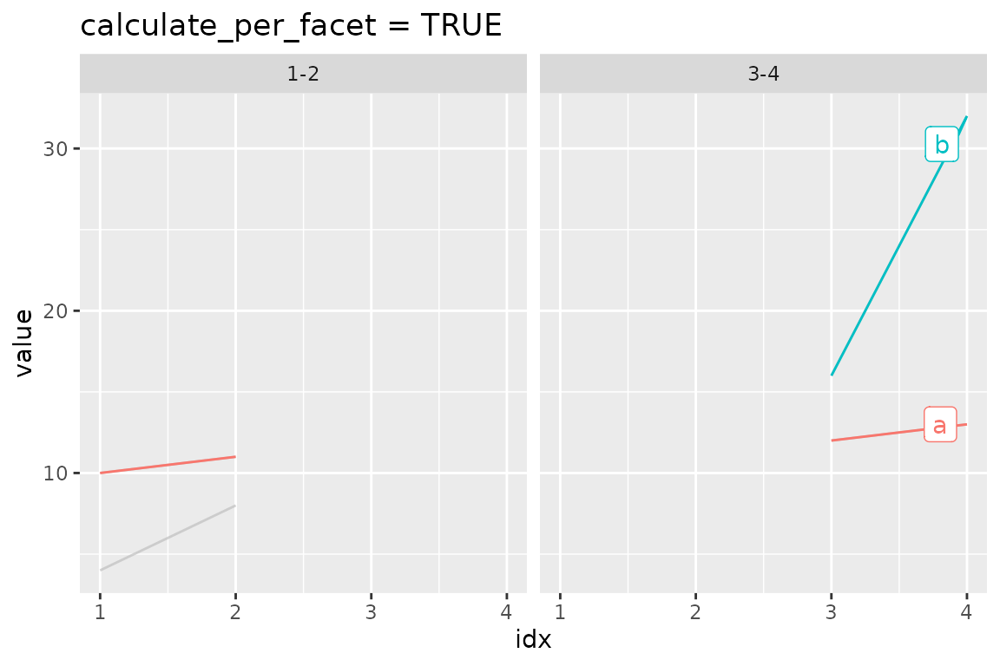
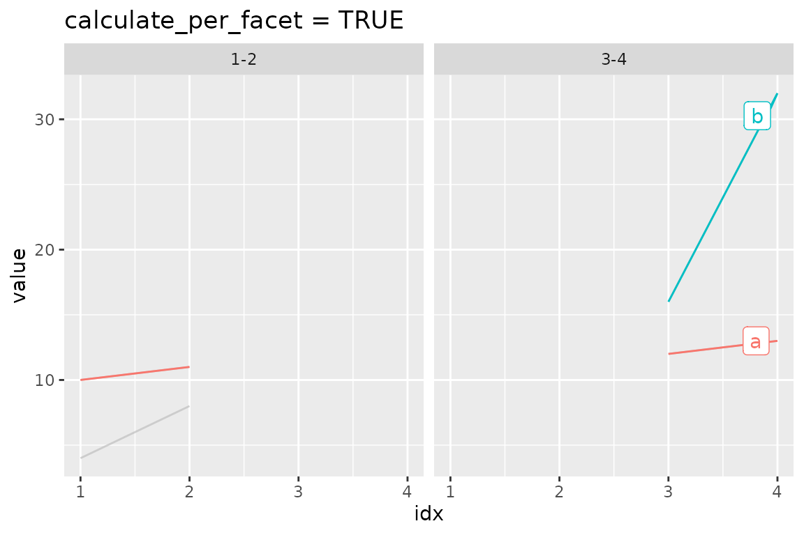
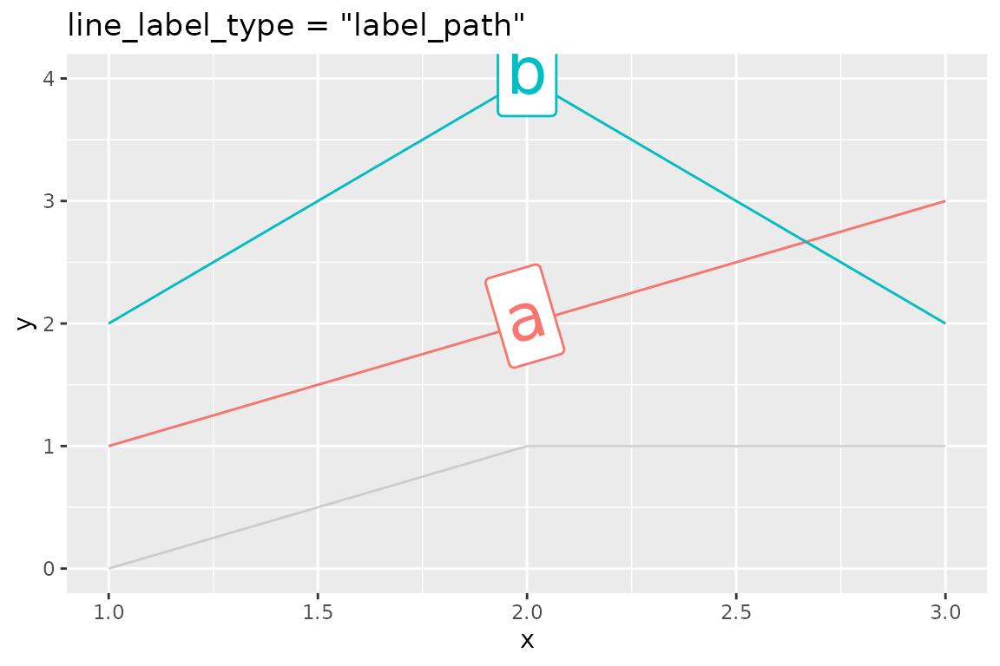

Introduction to gghighlight
Hiroaki Yutani
2022-10-16
Source:vignettes/gghighlight.Rmd
gghighlight.RmdMotivation
Suppose we have data that has so many series that it is hard to identify them by their colours as the differences are so subtle.
set.seed(2)
d <- purrr::map_dfr(
letters,
~ data.frame(
idx = 1:400,
value = cumsum(runif(400, -1, 1)),
type = .,
flag = sample(c(TRUE, FALSE), size = 400, replace = TRUE),
stringsAsFactors = FALSE
)
)
To filter the data to a reasonable number of lines, we can use dplyr’s filter().
library(dplyr, warn.conflicts = FALSE)
d_filtered <- d %>%
group_by(type) %>%
filter(max(value) > 20) %>%
ungroup()
ggplot(d_filtered) +
geom_line(aes(idx, value, colour = type))
But, it seems not so handy. For example, what if we want to change the threshold in predicate (max(value) > 20) and highlight other series as well? It’s a bit tiresome to type all the code above again every time we replace 20 with some other value.
Besides, considering one of the main purposes of visualization is to get the overview of a data, it may not be good to simply filter out the unmatched data because the plot will lose its context.
Here comes gghighlight package, dplyr::filter() equivalent for ggplot2.
(If you are interested in more details behind the idea of highlighting, please read this post: Anatomy of gghighlight.)
gghighlight()
The main function of the gghighlight package is gghighlight(). For example, by using this function, we can highlight the lines whose max values are larger than 20 as seen below:
library(gghighlight)
ggplot(d) +
geom_line(aes(idx, value, colour = type)) +
gghighlight(max(value) > 20)
#> label_key: type
You can specify as many predicates as you like. For example, the following code highlights the data that satisfies both max(value) > 15 and mean(flag) > 0.55.
ggplot(d) +
geom_line(aes(idx, value, colour = type)) +
gghighlight(max(value) > 15, mean(flag) > 0.5)
#> label_key: type
Customization
As adding gghighlight() results in a ggplot object, it is fully customizable just as we usually do with ggplot2 like custom themes.
ggplot(d) +
geom_line(aes(idx, value, colour = type)) +
gghighlight(max(value) > 19) +
theme_minimal()
#> label_key: type
The plot also can be facetted:
ggplot(d) +
geom_line(aes(idx, value, colour = type)) +
gghighlight(max(value) > 19) +
theme_minimal() +
facet_wrap(~ type)
#> label_key: type
There are also some options to control the way of highlighting. See “Options” section below.
Geoms
gghighlight() can highlight almost every geom. Here are some examples.
Bar
gghighlight() can highlight bars.
p <- ggplot(iris, aes(Sepal.Length, fill = Species)) +
geom_histogram() +
gghighlight()
#> label_key: Species
p
#> `stat_bin()` using `bins = 30`. Pick better value with `binwidth`.
#> `stat_bin()` using `bins = 30`. Pick better value with `binwidth`.
Are you wondering if this is really highlighted? Yes, it is. But, the unhighlighted bars are all overwritten by the highlighted bars. This seems not so useful, until you see the facetted version:
p + facet_wrap(~ Species)
#> `stat_bin()` using `bins = 30`. Pick better value with `binwidth`.
#> `stat_bin()` using `bins = 30`. Pick better value with `binwidth`.
Point
As is explained in Anatomy of gghighlight, lines and points typically have different semantics (group-wise or not). But, in most cases, you don’t need to be careful about the difference with gghighlight() because it automatically picks the right method of calculation.
set.seed(10)
d2 <- dplyr::slice_sample(d, n = 20)
ggplot(d2, aes(idx, value)) +
geom_point() +
gghighlight(value > 0, label_key = type)
More precisely, gghighlight() takes the following strategy:
- Calculate the group IDs from mapping.
- If
groupexists, use it. - Otherwise, assign the group IDs based on the combination of the values of discrete variables.
- If
- If the group IDs exists, evaluate the predicates in a grouped manner.
- If the group IDs doesn’t exist or the grouped calculation fails, evaluate the predicates in an ungrouped manner.
Note that, in this case, label_key = type is needed to show labels because gghighlight() chooses a discrete variable from the mapping, but aes(idx, value) consists of continuous variables only.
Non-logical predicate
To construct a predicate expression like below, we need to determine a threshold (in this example, 20). But it is difficult to choose a nice one before we draw plots.
max(value) > 20So, gghighlight() allows predicates that return non-logical (e.g. numeric and character) results. The values are used for sorting data and the top max_highlight of rows/groups are highlighted:
ggplot(d, aes(idx, value, colour = type)) +
geom_line() +
gghighlight(max(value), max_highlight = 5L)
#> label_key: type
Labels
gghighlight() adds direct labels for some geoms. Currently, the following geoms are supported:
-
point: add labels at each highlighted point. -
line: add labels at the right end of each highlighted line. -
bar: (do not add labels)
If you don’t want them to be labelled automatically, you can specify use_direct_label = FALSE
ggplot(d) +
geom_line(aes(idx, value, colour = type)) +
gghighlight(max(value) > 20, use_direct_label = FALSE)
Labels are drawn by geom_label_repel(). If you want to customize the labels, you can pass parameters to it via label_params.
ggplot(d) +
geom_line(aes(idx, value, colour = type)) +
gghighlight(max(value) > 20, label_params = list(linewidth = 10))
#> label_key: type
#> Warning: Ignoring unknown parameters: linewidth
You can also add labels by yourself. It is easy to add labels on only highlighted data because gghighlight() replaces the plot’s data to the filtered one.
p <- ggplot(d2, aes(idx, value)) +
geom_point(size = 4) +
gghighlight(value > 0, use_direct_label = FALSE)
# the filtered data
p$data
#> idx value type flag
#> 3 380 6.6660069 n FALSE
#> 4 8 0.3777038 e TRUE
#> 5 262 13.5285254 d FALSE
#> 6 391 12.1243689 s TRUE
#> 7 339 16.0241787 y FALSE
#> 9 239 14.6301167 s FALSE
#> 12 202 3.7365540 i FALSE
#> 14 152 6.5393768 y FALSE
#> 16 319 19.2898939 s FALSE
#> 17 360 13.0007351 s FALSE
#> 20 214 4.1910452 z FALSE
p + geom_label(aes(label = type),
hjust = 1, vjust = 1, fill = "purple", colour = "white", alpha= 0.5)
Options
unhighlighted_params
If you want to change the style of unhighlighted layers, use unhighlighted_params.
ggplot(d) +
geom_line(aes(idx, value, colour = type), linewidth = 5) +
gghighlight(max(value) > 19,
unhighlighted_params = list(linewidth = 1, colour = alpha("pink", 0.4)))
#> Warning: Ignoring unknown parameters: linewidth
#> label_key: typeYou can also specify NULL to fill or colour to preserve the original color.
ggplot(d) +
geom_line(aes(idx, value, colour = type)) +
gghighlight(max(value) > 19,
# preserve colour and modify alpha instead
unhighlighted_params = list(colour = NULL, alpha = 0.3))
#> label_key: type
keep_scales
If you want to keep the original scales, set keep_scales to TRUE.
p <- ggplot(mtcars, aes(wt, mpg, colour = factor(cyl))) +
geom_point()
p + gghighlight(cyl == 6)
#> Warning: Tried to calculate with group_by(), but the calculation failed.
#> Falling back to ungrouped filter operation...
p + gghighlight(cyl == 6, keep_scales = TRUE) + ggtitle("keep_scales = TRUE")
#> Warning: Tried to calculate with group_by(), but the calculation failed.
#> Falling back to ungrouped filter operation...

calculate_per_facet
If you want to highlight each facet individually, set calculate_per_facet to TRUE. Note that gghighlight() affects the plot before gghighlight(). If you add facet_*() after adding gghighlight(), this option doesn’t work.
d <- data.frame(
idx = c(1, 2, 3, 4, 1, 2, 3, 4),
value = c(10, 11, 12, 13, 4, 8, 16, 32),
cat1 = rep(c("a", "b"), each = 4),
cat2 = rep(rep(c("1-2", "3-4"), each = 2), 2),
stringsAsFactors = FALSE
)
p <- ggplot(d, aes(idx, value, colour = cat1)) +
geom_line() +
facet_wrap(vars(cat2))
p +
gghighlight(max(value) > 10)
#> label_key: cat1
p +
gghighlight(max(value) > 10, calculate_per_facet = TRUE) +
ggtitle("calculate_per_facet = TRUE")
#> label_key: cat1 

line_label_type (experimental)
By default, gghighlight uses the ggrepel package for labeling lines. You can change the method by line_label_type argument. The options are:
-
"ggrepel_label"(default): Useggrepel::geom_label_repel(). -
"ggrepel_text": Useggrepel::geom_text_repel(). -
"text_path": Usegeomtextpath::geom_textline()for lines andgeomtextpath::geom_textpath()for paths. -
"label_path": Usegeomtextpath::geom_labelline()for lines andgeomtextpath::geom_labelpath()for paths. -
"sec_axis": Use secondary axis. Please refer to Simon Jackson’s blog post for the trick.
d <- data.frame(
x = rep(1:3, times = 3),
y = c(1:3, 2, 4, 2, 0, 1, 1),
id = rep(c("a", "b", "c"), each = 3)
)
p <- ggplot(d) +
geom_line(aes(x, y, colour = id))
p +
gghighlight(max(y) >= 3, line_label_type = "label_path", label_params = list(size = 10)) +
ggtitle('line_label_type = "label_path"')
#> label_key: id
p +
gghighlight(max(y) >= 3, line_label_type = "sec_axis") +
ggtitle('line_label_type = "sec_axis"') +
theme(axis.text.y.right = element_text(size = 20))
#> label_key: id
Note that, while this looks good for this example, there are some limitations:
- Unlike ggrepel, there’s no mechanism to avoid overlapping. You’ll probably want to choose
ggrepel_labelorggrepel_textwhen the data has many series. - Since
"sec_axis"is a very different approach than the other, somelabel_paramsare ignored. For example, if you want to change the text size of the labels, you need to specify it viaggplot2::theme()instead oflabel_params.